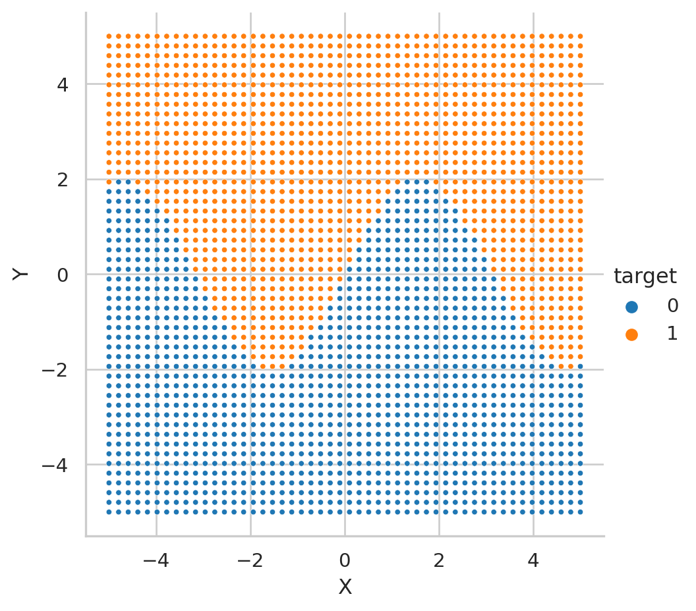

特徴量エンジニアリング
数値特徴量の和と差
境界が \(y = -x\) のとき
境界は \(y = -x\) つまり、 \(y + x = 0\) であるから、 \(y + x\) という特徴量を作成することで、 境界が軸に沿うようになり、 決定木での分離が用意になる。 そのことを以下で見ていく。
格子点のデータを作成。 \(y = -x\) を境にクラスを分ける。
x = np.linspace(-5, 5)
y = np.linspace(-5, 5)
x_mesh, y_mesh = np.meshgrid(x, y)
df = pl.DataFrame({
"X":x_mesh.ravel(),
"Y":y_mesh.ravel(),
})
df = df.with_column(
(pl.col("Y") > (- pl.col("X"))).cast(pl.UInt8).alias("target")
)
df.head()
shape: (5, 3)
| X | Y | target |
|---|---|---|
| f64 | f64 | u8 |
| -5.0 | -5.0 | 0 |
| -4.795918 | -5.0 | 0 |
| -4.591837 | -5.0 | 0 |
| -4.387755 | -5.0 | 0 |
| -4.183673 | -5.0 | 0 |
可視化
和と差を計算する
可視化
コード

X+Yにしたもの。右は縦軸をX=Yにしたもの。和 X+Y と元の変数 X の2次元では、境界が軸に沿っているので、深さ1の決定木でほぼ分離できる。差X=Y とXの2次元では、境界が軸に沿っていないので、決定木の深さが必要となる。境界が \(y = 2 \sin (x)\) のとき
データ作成
x = np.linspace(-5, 5)
y = np.linspace(-5, 5)
x_mesh, y_mesh = np.meshgrid(x, y)
df = pl.DataFrame({
"X":x_mesh.ravel(),
"Y":y_mesh.ravel(),
})
df = df.with_column(
(pl.col("Y") > 2 * np.sin(pl.col("X"))).cast(pl.UInt8).alias("target")
)
df.head()
shape: (5, 3)
| X | Y | target |
|---|---|---|
| f64 | f64 | u8 |
| -5.0 | -5.0 | 0 |
| -4.795918 | -5.0 | 0 |
| -4.591837 | -5.0 | 0 |
| -4.387755 | -5.0 | 0 |
| -4.183673 | -5.0 | 0 |
可視化

特徴量作成
\(z = y - 2 \sin(x)\) とする。
shape: (5, 4)
| X | Y | target | Z |
|---|---|---|---|
| f64 | f64 | u8 | f64 |
| -5.0 | -5.0 | 0 | -6.917849 |
| -4.795918 | -5.0 | 0 | -6.993027 |
| -4.591837 | -5.0 | 0 | -6.985485 |
| -4.387755 | -5.0 | 0 | -6.895535 |
| -4.183673 | -5.0 | 0 | -6.726911 |